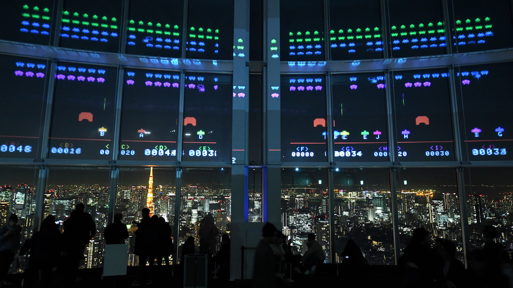

19 stycznia 2018
Czerwiec 1978, Japonia. Do salonów gier w Japonii wchodzą właśnie automaty z grą Space Invaders, inaugurując tym samym złotą erę gier arcade.

W razie gdyby czytelnicy tego tekstu doznali zaników pamięci, czy innej pomroczności jasnej, bo nie wierzę, że ktoś tutaj zaglądający nie kojarzy tytułu, przypomnę, że w grze kierowaliśmy laserowym działkiem na dole ekranu i naszym celem było zlikwidowanie hordy kosmitów, zanim zdołali przemieścić się z góry na dół.
Styczeń 2018, również Japonia. W Kraju Kwitnącej Wiśni trwają przygotowania do obchodów 40-lecia powstania Najeźdźców z Kosmosu. Z tej okazji w tokijskiej dzielnicy Roppongi, w drapaczu chmur Mori Tower, gdzie na codzień mieści się Centrum i Muzeum Sztuki, otwarto wystawę "Play! Space Invaders", której główną atrakcją jest "Space Invaders Gigamax".
Okna tarasu widokowego na 52. piętrze wieżowca zostały odpowiednio przystosowane by wyświetlać grę Space Invaders jednocześnie nawet dla dziesięciu graczy. Swoich sił w obronie planety przed najeźdźcami z kosmosu można spróbować (codziennie po zachodzie słońca, tj. ~17:30 lokalnego czasu) do końca stycznia za jedyne 1800 japońskich jenów (ok. 55 złotych). W cenie wliczony jest także wstęp na Tokyo City View, oraz do muzeum sztuki.